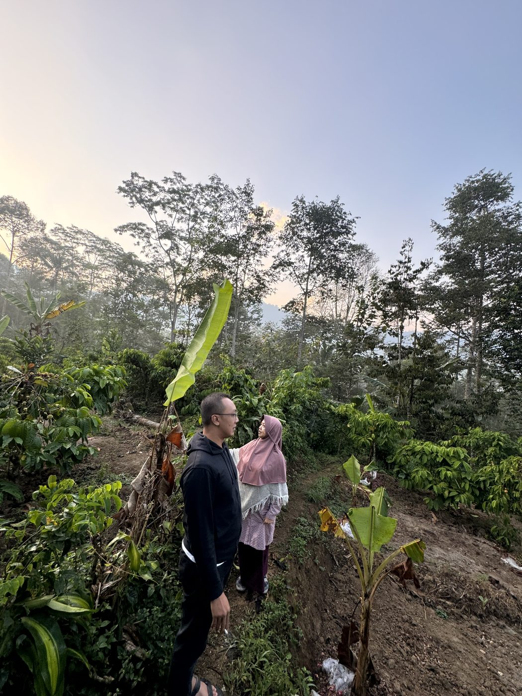
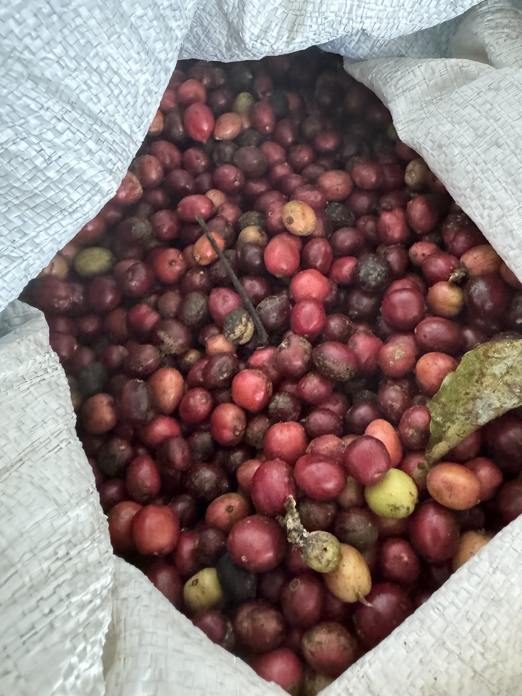
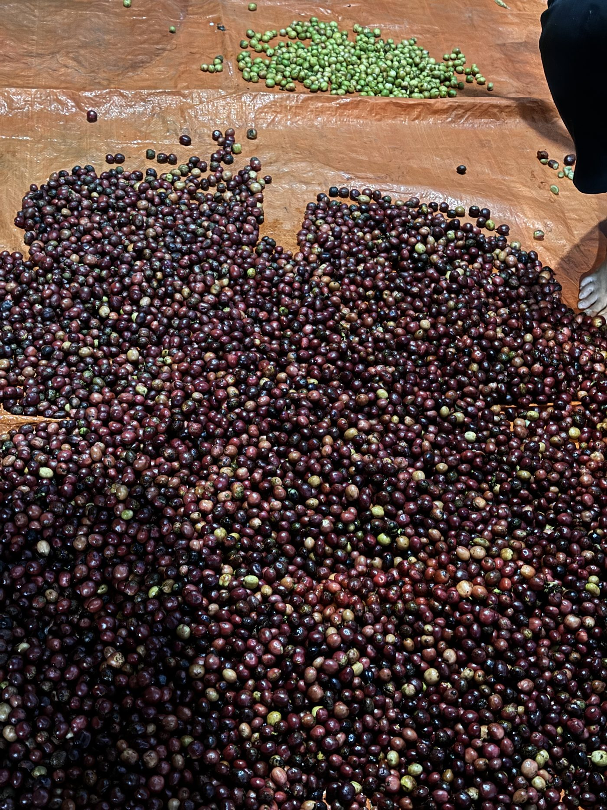
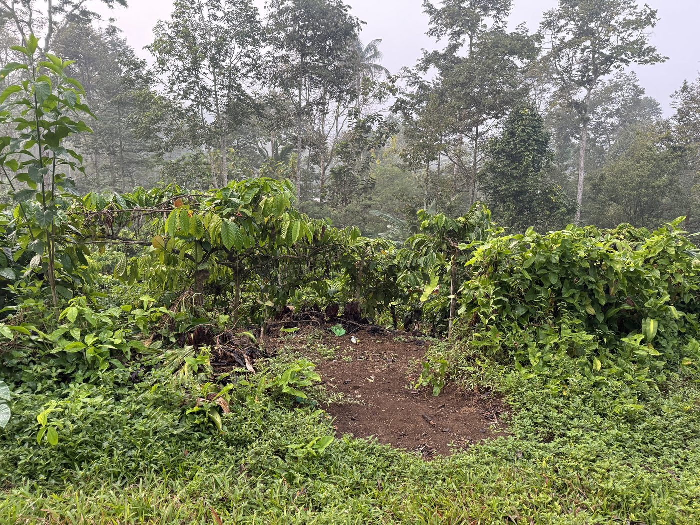
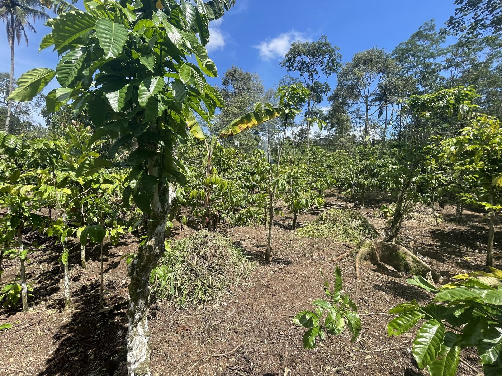
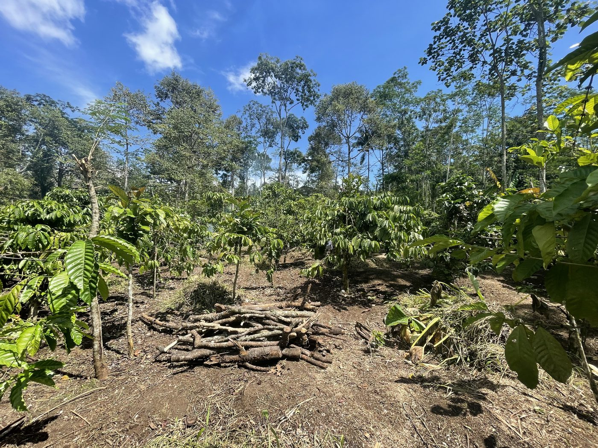

Program Wakaf Produktif Perkebunan Kopi Ngantang berada pada titik yang langka dalam siklus pengelolaan aset agroforestri: pergantian manajemen yang terdokumentasi, tepat sebelum intervensi pertama dimulai, setelah 39 bulan pengelolaan lintas tiga fase tanpa satu pun pengukuran agronomi dasar yang dilakukan secara formal. Kondisi pra-intervensi yang otentik ini tidak dapat direplikasi setelah panen Juni 2026 berjalan.


Data per April 2026 — mencakup aspek legal, teknis, dan historis yang tersedia untuk keperluan riset.
| Nama Program | Wakaf Produktif Perkebunan Kopi Ngantang |
| Kategori | Wakaf Produktif — Sektor Pertanian & Agroforestri |
| Wakif | Adib Asrori, M.Psi., Psikolog ↗ |
| Nadzir | Rumah Wakaf Indonesia (RWI) ↗ |
| Status Legal | ✓ Aktif MOU Wakif–Nadzir dengan Rumah Wakaf Indonesia (2022) |
| Apa itu Wakaf? | Lihat penjelasan BWI ↗ |
| Lokasi | Dusun Bonsari, Desa Ngantang, Kec. Ngantang, Kab. Malang, Jawa Timur |
| Koordinat GPS | -7.8525, 112.3748 ↗ |
| Ketinggian | ±700–870 mdpl estimasi |
| Luas Kebun | ±2.200 m² (3 bidang) |
| Pohon Produktif | ~915 pohon Robusta |
| Baseline Data | ⚠ Belum tersedia pH, NPK, EC, peta pohon belum pernah diukur |
Foto baseline kebun — diambil pada periode 2023–2024 sebagai dokumentasi kondisi sebelum intervensi manajemen baru dimulai.




Data keuangan dan produksi dari tiga fase manajemen — seluruhnya terdokumentasi dan tersedia untuk peneliti sebagai baseline riset.
| Fase | Durasi | Pengeluaran |
|---|---|---|
| Fase 1a — Adib (undocumented) | 15 bln | ~Rp 15 Jt |
| Fase 1b — Adib (documented) | 6 bln | Rp 14,49 Jt |
| Fase 2 — MWC NU Malang | 18 bln | Rp 19,58 Jt |
| TOTAL | ~39 bln | ~Rp 49,1 Jt |
Total pendapatan kumulatif: ~Rp 34,6 Jt vs pengeluaran ~Rp 49,1 Jt. Saldo positif pertama kali tercapai di akhir Fase 2.
Skala lahan yang kecil bukanlah hambatan bagi relevansi ilmiah — bergantung pada pertanyaan yang diajukan. Berikut tiga dimensi keunikan yang masing-masing mengarah pada pertanyaan riset yang genuine dan belum banyak terjawab dalam literatur.
Enam pertanyaan riset berikut diidentifikasi sebagai genuine gaps — pertanyaan yang belum memiliki jawaban dalam literatur yang kami ketahui, dan yang secara empiris dapat dijawab dengan data dari lokasi ini.
Kami tidak mengharapkan kesepakatan langsung. Namun kami percaya bahwa kolaborasi yang bermakna dimulai dari kejujuran — termasuk tentang apa yang masing-masing pihak butuhkan dan tawarkan.
Adib Asrori, M.Psi., Psikolog · Wakif Program Wakaf Produktif Perkebunan Kopi Ngantang
Ada sebab mengapa kebun ini bukan sekadar laporan kerja bagi yang menanggung amanahnya. Di antara pohon-pohon kopi inilah ia pertama kali belajar tentang hidup — dari seorang kakek yang tak pernah sekalipun marah, yang mengajarkan nilai dengan cara hadir, bukan bersuara.
Wakaf bukan investasi yang menunggu panen. Wakaf adalah doa yang diwujudkan dalam tanah — dan janji kepada mereka yang akan datang setelah kita.
Barangkali memang begitulah cara ilmu pengetahuan terbaik lahir: dari pertemuan antara pertanyaan yang tepat, kondisi lapangan yang tersedia, dan orang-orang yang bersedia bertanya bersama. Kebun kecil ini menunggu untuk ditanya.